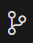

Making a Plan
Here you will define HOW to implement the feature from a technical point of view. This will include information about the tech stack you want to use, how you want to be able to monitor the features, how you want your code to be organized, testing, and anything else specific to the code.
Understanding what will be included in your plan
Authoritative-Document Workflow
- Identify every authoritative document listed in the specification and map it to the implementation area it governs.
- Review and follow each authoritative document before designing the related integration.
- Extract the relevant endpoint URLs, methods, request bodies, response bodies, event envelopes, payload fields, and status codes into contract documentation.
- Record the exact source links and resolve conflicts between documents before coding.
- Record any approved deviation from an authoritative source in
deviations.md.
Bridge and Event Handling
- Treat the hosted hook-to-socket middleware as an external integration boundary; do not design or implement the bridge itself.
- Design a boundary component that extracts the embedded Webex or WxCC webhook payload from the WebSocket message envelope.
- Validate the bridge envelope and embedded webhook payload before routing.
- Classify the event source and event type before applying direction or lifecycle logic.
- Use the hook-to-socket specification as the authoritative source for connection and message-envelope details.
Correlation and Idempotency
- Design correlation so the WxCC task ID returned by task creation is stored with the corresponding Webex conversation.
- Support lookup in both directions: Webex conversation to WxCC task for inbound appends, and WxCC task to Webex conversation for outbound events.
- Define stable idempotency keys for Webex messages, WxCC events, and bridge deliveries.
- Ensure repeated events cannot create duplicate tasks, append duplicate messages, or send duplicate outbound messages during the lifetime of the running process.
API Validation and Deviations
- Design automated contract and HTTP-boundary tests using production-shaped fixtures or mocks for exact URLs, methods, headers, request bodies, response bodies, and documented success statuses.
- Validate actual request and response payloads against the authoritative OpenAPI schemas.
- Do not invent local request/response DTOs or silently transform payloads outside the published contract.
- Support the approved
202 Acceptedtask-creation response only when it is recorded indeviations.md, while continuing to validate the response body against the authoritative schema.
Observability
- Design structured JSON logging for every API call, task transition, validation rejection, routing decision, and failure.
- Include a timestamp, operation, outcome, relevant identifiers, and error context in each record, with secrets and sensitive values redacted.
- Use simple fixed log levels:
infofor successful operations and state transitions,warnfor rejected, duplicate, skipped, or recoverable conditions, anderrorfor failed operations and recovery-required events. - Record failures with enough correlation data to support explicit recovery and troubleshooting.
- Do not add configurable logging infrastructure or aggregation systems unless required by the current lab.
Configuration and Security
- Design a configuration module that loads
.envand validates required values before message processing begins. - Organize
.env.examplevariables by service and document whether each URL is a service root or a complete endpoint. - Require service root URL variables to contain only the scheme and top-level domain.
- Allow endpoint-specific variables to include their required path, such as the WxCC token URL.
- Do not append paths in code to variables that are already defined as complete endpoint URLs.
- Redact credentials, tokens, secrets, and sensitive personal data from logs, tests, documentation examples, build artifacts, and other committed or observable artifacts.
Testing and Validation Evidence
- Add automated tests for each changed behavior, using production-shaped Webex, WxCC, and WebSocket bridge fixtures.
- Include fixtures for Webex message notifications, WxCC lifecycle events, WxCC task-message
events, task responses, failure responses, and the approved
202response. - Document a manual integration-validation workflow for the hosted bridge and external services, including required environment variables, event triggers, expected outcomes, and structured-log evidence.
- Do not assume automated tests can access live services or trigger external workflows.
- Use the manual workflow for live confirmation of bridge connectivity, task creation, appends, outbound delivery, closure handling, and loop prevention.
Let's make the plan
Add the prompt to the Agent conversation
Copy the text from the dropdown below into the Agent Prompt
Code
/speckit-plan - Use node 26 - Identify every authoritative document listed in the specification and map it to the implementation area it governs. - Review and follow each authoritative document before designing the related integration. - Extract the relevant endpoint URLs, methods, request bodies, response bodies, event envelopes, payload fields, and status codes into contract documentation. - Record the exact source links and resolve conflicts between documents before coding. - Record any approved deviation from an authoritative source in `deviations.md`. - Treat the hosted hook-to-socket middleware as an external integration boundary; do not design or implement the bridge itself. - Design a boundary component that extracts the embedded Webex or WxCC webhook payload from the WebSocket message envelope. - Validate the bridge envelope and embedded webhook payload before routing. - Classify the event source and event type before applying direction or lifecycle logic. - Use the hook-to-socket specification as the authoritative source for connection and message-envelope details. - Design correlation so the WxCC task ID returned by task creation is stored with the corresponding Webex conversation. - Support lookup in both directions: Webex conversation to WxCC task for inbound appends, and WxCC task to Webex conversation for outbound events. - Define stable idempotency keys for Webex messages, WxCC events, and bridge deliveries. - Ensure repeated events cannot create duplicate tasks, append duplicate messages, or send duplicate outbound messages during the lifetime of the running process. - Design automated contract and HTTP-boundary tests using production-shaped fixtures or mocks for exact URLs, methods, headers, request bodies, response bodies, and documented success statuses. - Validate actual request and response payloads against the authoritative OpenAPI schemas. - Do not invent local request/response DTOs or silently transform payloads outside the published contract. - Support the approved `202 Accepted` task-creation response only when it is recorded in `deviations.md`, while continuing to validate the response body against the authoritative schema. - Design structured JSON logging for every API call, task transition, validation rejection, routing decision, and failure. - Include a timestamp, operation, outcome, relevant identifiers, and error context in each record, with secrets and sensitive values redacted. - Use simple fixed log levels: `info` for successful operations and state transitions, `warn` for rejected, duplicate, skipped, or recoverable conditions, and `error` for failed operations and recovery-required events. - Record failures with enough correlation data to support explicit recovery and troubleshooting. - Do not add configurable logging infrastructure or aggregation systems unless required by the current lab. - Design a configuration module that loads `.env` and validates required values before message processing begins. - Organize `.env.example` variables by service and document whether each URL is a service root or a complete endpoint. - Require service root URL variables to contain only the scheme and top-level domain. - Allow endpoint-specific variables to include their required path, such as the WxCC token URL. - Do not append paths in code to variables that are already defined as complete endpoint URLs. - Redact credentials, tokens, secrets, and sensitive personal data from logs, tests, documentation examples, build artifacts, and other committed or observable artifacts. - Add automated tests for each changed behavior, using production-shaped Webex, WxCC, and WebSocket bridge fixtures. - Include fixtures for Webex message notifications, WxCC lifecycle events, WxCC task-message events, task responses, failure responses, and the approved `202` response. - Document a manual integration-validation workflow for the hosted bridge and external services, including required environment variables, event triggers, expected outcomes, and structured-log evidence. - Do not assume automated tests can access live services or trigger external workflows. - Use the manual workflow for live confirmation of bridge connectivity, task creation, appends, outbound delivery, closure handling, and loop prevention.Press Enter to send the prompt
Review the artifacts created for your plan
Plan
What Language/Version is being used in the plan?
Contracts
You may have separate files for each API contact or a monolithic contract which describes all of the API contracts.
Data Model
You should see Rules, Field Mapping, etc.
Research
This will explain why specific choices were made.
Deviations
This will mention deviations from the specifications in the API documentation based on the Spec.
Quickstart
This will contain setup instructions and manual testing for once the feature has been implemented.
Commit the changes to your repository
This will allow you to easily identify the changes which are made as you progress through the project as well as let you revert to a previous point in the code history.
Click the Source Control button in the left menu

Click the+next to Changes to add all changes to the commit
Add a commit message:Plan Created
Click the Commit button
Return to the ExplorerShow Me
{kind=link}
{kind=link}